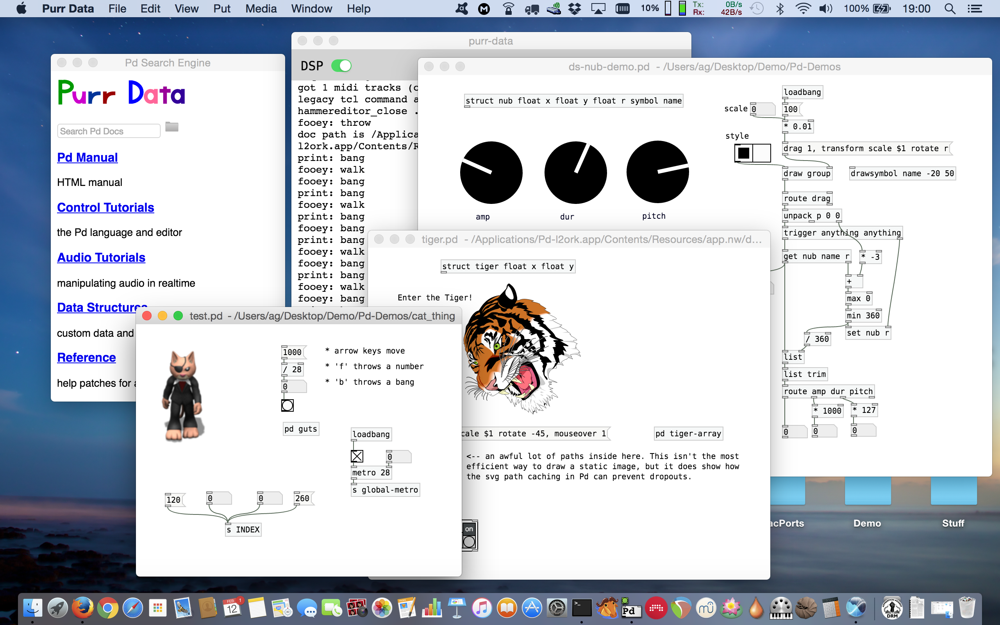
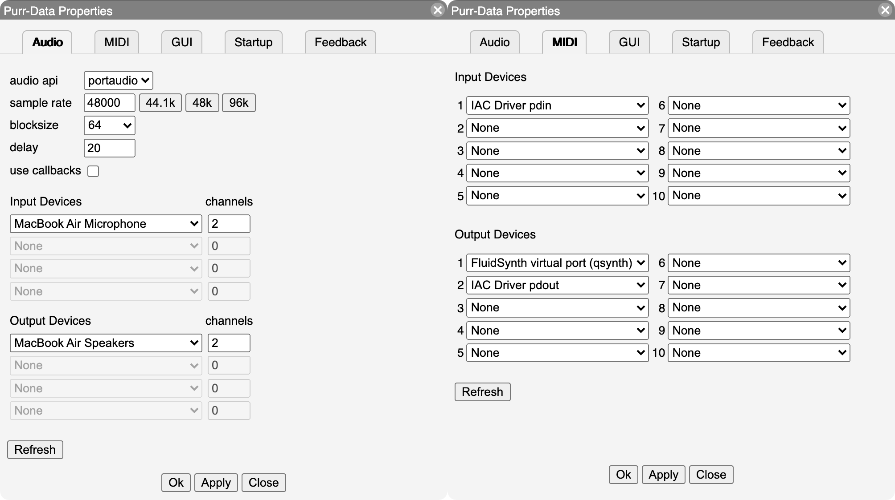
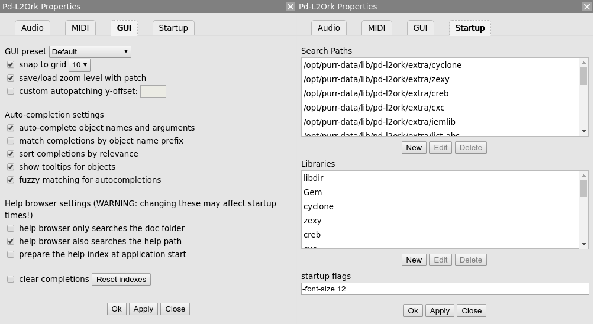
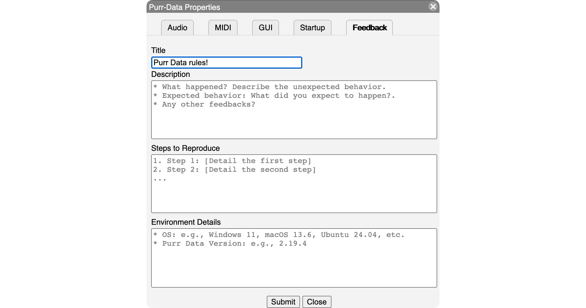
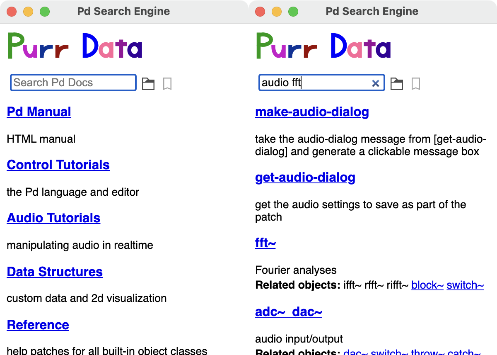
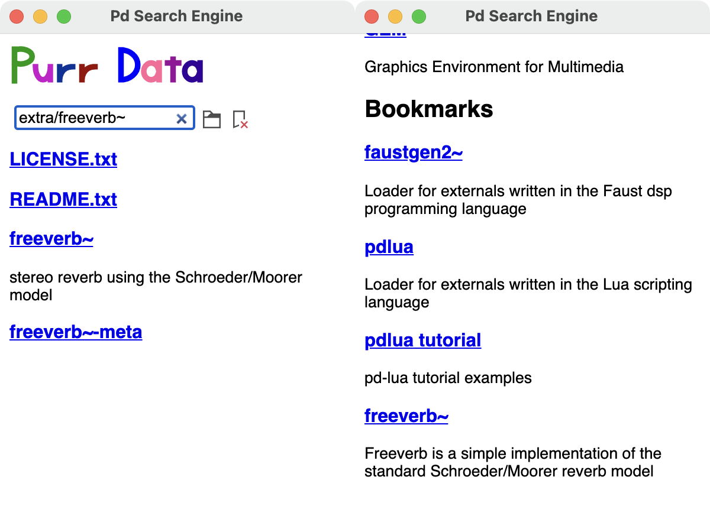

Albert Gräf <aggraef@gmail.com>
Computer Music Dept., Institute of Art History and Musicology
Johannes Gutenberg University (JGU) Mainz, Germany
September 2024
This document is licensed under CC BY-SA 4.0. Other formats: Markdown source, PDF
Permanent link: https://agraef.github.io/purr-data-intro/
Purr Data is an improved version of Miller Puckette's interactive computer music and multimedia software Pd. This document provides new or prospective Purr Data users with a gentle introduction to the program and some helpful information to get started.
Purr Data is the latest (2.x) branch of Ivica Ico Bukvic's Pd-l2ork. Pd-l2ork in turn was a fork of Hans-Christoph Steiner's Pd-extended, which has been the longest-running (and arguably the most popular) variant of Miller Puckette's Pd. Pd a.k.a. Pure Data, the common basis of all these variants, is Miller Puckette's interactive and graphical computer music and multimedia environment. Pd is also the premier open-source alternative to Cycling74's well-known commercial Max program (whose original version was also developed by Miller Puckette when he was at IRCAM in the 1980s). There are a few other popular and very capable applications in the realm of computer music and media art, most notably Csound and SuperCollider. But Max and Pd's special appeal is that you work in an intuitive graphical "patching" environment which allows you to put together advanced real-time signal processing applications without having to learn a "real" programming language.
Puckette's version of the program is sometimes jokingly referred to as "vanilla" Pd, because it comes without any extras and thus provides the purest taste of Pd, you might say. In keeping with this metaphor, the other Pd variants are often called flavors.
While vanilla Pd, being the reference implementation, remains critically important for the development of Pd's real-time engine, its Tcl/Tk-based graphical user interface has never been very pretty or convenient. Consequently there have been several attempts by the community to improve Pd's user interface in various ways. Pd-extended is the earliest and the longest-running of these, which also includes a fairly complete selection of 3rd party add-ons. However, its development has stopped in 2013, and thus it is considered obsolete now.
Ico Bukvic introduced Pd-l2ork in 2010 as a fork of Pd-extended to be used by the "Linux Laptop Orchestra" (L2Ork) he founded at the School of Performing Arts at Virginia Tech. Although the original motivation was to create an improved version of Pd-extended to be used by the L2Ork (hence the name) as well as in education, on Linux it quickly became a more up-to-date alternative to Pd-extended offering a fair number of additional bug fixes and GUI improvements. This was mainly due to its more nimble development model which allowed bugfixes and improvements to be deployed quickly even if this may have had an impact on backwards compatibility. Vanilla Pd, on the other hand, necessarily has a much firmer outlook on backwards compatibility, so that it is still able to run very old patches created with ancient Pd versions.
Despite the many and substantial improvements it offered, Pd-l2ork's GUI was still based on Tcl/Tk. This was both good and bad. The major advantage was compatibility with vanilla Pd. On the other hand, Tcl/Tk looks and feels outdated in this day and age, even when going to some lengths with theming, as Pd-l2ork did. Tcl is a rather basic programming language, and its libraries have been falling behind, making it hard to integrate the latest advancements in GUI, multimedia and web technologies. Also, Pd-l2ork's adoption was hampered by the fact that it was essentially tied to Linux, and thus a cross-platform solution was needed.
In 2015 Jonathan Wilkes stepped in and started creating Purr Data to address these problems. In a nutshell, Purr Data is Pd-l2ork with the Tcl/Tk GUI part ripped out and replaced with modern web technology. To these ends, it uses an open-source framework called nw.js a.k.a. "node-webkit", which is essentially a stand-alone web browser engine (Chromium) combined with a JavaScript runtime (Node.js). While the latter was originally invented for developing server-side web applications, frameworks like nw.js allow the two to be used in concert to create fully-fledged and portable desktop applications. Using nw.js ensures that Purr Data runs on Linux, Mac and Windows, looking the same on all supported platforms, and it paves the way to leverage standard web technologies such as JavaScript, HTML5, CSS3 and SVG.
Purr Data's GUI is written entirely in JavaScript, which is a much more advanced programming language than Tcl with an abundance of libraries and support materials. This makes the further development of Purr Data's graphical user interface a lot easier now that the initial GUI port is done. Patches are implemented as HTML5 SVG documents which offer better responsiveness and graphical capabilities than Tk windows. They can also be themed using CSS and zoomed like any browser window, improving usability. Purr Data also looks better and is easier on the eyes than classic Pd-l2ork, let alone vanilla Pd, especially on high-dpi displays (cf. Fig. 1).

Purr Data's nw.js GUI also has some disadvantages. First, some of the included externals still rely on Tcl code, so their GUI features will not work in Purr Data until they get ported to the new GUI. Second, the size of the binary package is considerably larger than with Pd-extended since it also includes the full nw.js binary distribution. (This is a valid concern with many of the so-called "portable desktop applications" being offered these days.) Third, the browser engine has a much higher memory footprint than Tcl/Tk which might be an issue on embedded platforms with very tight memory constraints. While none of these issues should normally be a real show-stopper on the supported platforms, it is worth keeping them in mind.
Finally, Purr Data is still comparatively young, but it has been thoroughly tested by now, so it is certainly ready for day-to-day use. It also offers some really compelling advancements over its predecessors. If you have been looking for a modern and actively-maintained successor of Pd-extended, this is it.
Purr Data is the official nickname of the Pd-l2ork 2.x branch. To quote chief developer Jonathan Wilkes from his initial announcement on the Pd forum:
I've nicknamed it "Purr Data", because cats.
Quite obviously the name is a play on "Pure Data" on which "Purr Data" is ultimately based. It also raises positive connotations of soothing purring sounds, and makes for a nice logo.
We also refer to Bukvic's original Pd-l2ork version as Pd-l2ork 1.0 or "classic" Pd-l2ork. Note that Purr Data still clearly shows its Pd-l2ork heritage. It shares a lot of code with Pd-l2ork (essentially all the non-GUI parts), and the executable, library directory etc. are all still named after pd-l2ork as well.
Jonathan Wilkes maintains the Purr Data sources in GitLab at https://git.purrdata.net/jwilkes/purr-data. There's also a mirror of this repository at Github which serves as a one-stop shop for the latest source and the available releases, including pre-built packages for macOS and Windows. You can find this at https://agraef.github.io/purr-data/. The latest packages are available at https://github.com/agraef/purr-data/releases. The Mac and Windows packages should be self-contained. The Windows package is distributed as an installer executable (.exe file). Normally you can just run this package by double-clicking it in your file manager, and walk through the installation procedure. The Mac package is distributed as a disk image (.dmg file); double-clicking the disk image in Finder opens a new Finder window, in which you can drag the application to your Application folder.
Linux users: At JGU we maintain a collection of Linux packages for Arch Linux (via the Arch User Repositories a.k.a. AUR) and recent Fedora, Debian and Ubuntu releases (via the OBS a.k.a. Open Build System). The OBS also offers binary packages for Arch Linux. More information and installation instructions can be found at the Installation wiki page. Moreover, an additional programming extension is available in the pd-faustgen2 repository which enables you to run Faust externals in both Pd and Purr Data. Faust is Grame's functional dsp programming language which lets you build your own effects and instruments, and has an extensive library of common dsp algorithms which helps you with this.
Of course, it is also possible to build Purr Data from source. This task has become a lot less daunting than it used to be, and the Purr Data website has some instructions. However, because of the large number of included externals, the build process is rather involved, requires a lot of 3rd party dependencies, and takes quite a while even on modern high-end hardware. Therefore, unless your system isn't officially supported or you have specific requirements forcing you to compile from source, we recommend using the available binaries.
Once you've installed Purr Data, you can launch it from the desktop environment as usual. On Linux, you can just run purr-data from the command line, or look in your desktop environment's program menu or launcher for the Purr-Data entry and click on that.
On macOS and Windows, double-click on the application icon, normally to be found in the Application folder on macOS and on the desktop on Windows. (If you didn't create a desktop icon during the Windows installation, look for Purr-Data in the start menu.)
You can also right-click on a patch (.pd) file, choose "Open With" and then select Purr Data to open the patch in Purr Data. This may require a first-time setup to associate the .pd file type with the Purr Data program, however. Most desktop environments will also let you set Purr Data as the default application for .pd files, so that you can subsequently open patch files simply with a double-click. The details of this are system-specific; usually right-clicking the file and choosing Properties or some similar option (Get Info on macOS) will give you a dialog which allows you to change the file association.
In any case, Purr Data should then launch its main "console" window which logs all messages from the program. If you opened a patch file, it will be shown in a separate "canvas" window.
Purr Data understands basically the same set of command line options as vanilla Pd or Pd-l2ork. On Linux, you can find out about these by running purr-data -help from the command line. (This isn't easy to do on Mac and Windows, since the program executable is stowed away somewhere in the application folder.) Some common options which can be placed into the startup flags are -path and -lib, see section GUI and Startup Options below.
Unlike vanilla Pd, Purr Data normally runs as a single application instance. If you load additional patch files (by invoking the purr-data executable or by clicking patch files in the file manager), they will be opened as new canvas windows in that single unique instance. This prevents the kind of confusion which often arises with vanilla Pd if you accidentally open different patches in different instances of the application. Pd requires that patches are loaded in the same program instance if they are to communicate via Pd's built-in messaging system (send/receive), or if you'd like to copy/paste subpatches between them using the internal clipboard. In its default configuration, Purr Data makes sure that this is always the case.
As of version 2.3.2, Purr Data can also be invoked with the -unique flag to create multiple application instances. On Linux, you can do this by just specifying the -unique option on the command line or by editing the desktop icon you use to launch Purr Data. On Mac and Windows (as well as Linux), you can put this option into the startup flags in the preferences, see section GUI and Startup Options below. (Don't forget to remove the option from the startup flags again when it is not needed any more, in order to revert to the normal single application instance behavior.)
For most applications this shouldn't be needed, and the single application instance will be most convenient. But there are some situations in which you will want to run several instances of Purr Data instead. Because Purr Data's real-time processing is all done in a single process associated with the application instance, a single application instance cannot take advantage of the multi-processing capabilities on modern multi-core systems. Some common use cases for multi-processing are if your Pd application involves both audio and graphics processing (typically using the Gem library), or if you have several independent audio processes which you'd like to be run in parallel. In such cases you will want to use the -unique option to launch two or more instances of Purr Data, each with their own sets of Pd patches which will then run on different instances of the real-time engine.
When you launch Purr Data for the first time, most likely you will have to configure some things, such as the audio and MIDI devices that you want to use. Like classic Pd-l2ork, Purr Data provides a central "Preferences" dialog which lets you do this in a convenient way.
The screenshot in Fig. 2 shows how the "Audio" and "MIDI" tabs in this dialog look like on the Mac. For most purposes it should be sufficient to just select the audio and MIDI inputs and outputs that you want to use from the corresponding dropdown lists. Pressing the Apply button applies the settings without closing the dialog or saving the options permanently. If you want to make your changes permanent, you must use the Ok button instead. This also closes the dialog.
You can redo this procedure at any time if needed. Note that it is usually possible to select multiple input and output devices, but this depends on the platform and the selected audio/MIDI back-end or "API". Also note that on Linux (using the ALSA API), the MIDI tab will only allow you to set the number of ALSA MIDI input/output ports to be created; you then still have to use a MIDI patchbay program such as qjackctl to connect these ports to the hardware devices as needed.

The setup on Windows works in a similar fashion. More information for Linux users can be found in the wiki. One minor annoyance of the Pd engine is that, depending on the audio and MIDI API that you use, it may not automatically detect new external audio or MIDI gear while Purr Data is already running. In this case, pressing the Refresh button should update the device entries in the dropdown lists for you.
The GUI theme can be selected on the "GUI" tab (see Fig. 3, left). The changes will be applied immediately. Purr Data provides various different GUI themes out of the box. Note that the GUI themes are in fact just CSS files in Purr Data's library directory, so if you're familiar with HTML5 and CSS then you can easily change them or create your own. As of Purr Data version 2.16.0, the "snap to grid" option enables the edit mode grid, which helps positioning objects by placing them on grid points, and lets you see at a glance when edit mode is active. Another useful option on the GUI tab is "save/load zoom level with patch". Purr Data can zoom any patch window to 16 different levels, and this option, when enabled, allows you to store the current zoom level when a patch is saved, and then later restore the zoom level when the patch gets reloaded. The remaining options on the GUI tab are related to the help browser and the auto-completion facility, we'll discuss these in Configuring The Help Browser and Auto-Completion below.

The "Startup" tab (Fig. 3, right) lets you edit the lists of library paths and startup libraries, as well as the additional options the program is to be invoked with. By default, Purr Data loads most bundled external libraries at startup and adds the corresponding directories to its library search path. If you don't need all of these, you can remove individual search paths and/or libraries using the "Search Paths" and "Libraries" lists on the Startup tab. Just click on a search path or library and click the Delete button. It is also possible to select an item and add your own search paths and external libraries with the New button, or change an existing entry with the Edit button.
At the bottom of the Startup tab there is a "startup flags" field which lets you specify which additional options the program should be invoked with. This is commonly used to add options like -legacy (which enforces bug compatibility with vanilla Pd) as well as the -path and -lib options which provide an alternative way to add search paths and external libraries. For instance, to add the pd-faustgen2 extension to the startup libraries, the Startup Flags field may contain something like the following: -lib faustgen2~
Any desired startup options can be set that way, i.e., anything that Pd usually accepts on the command line. However, note that the startup flags require that you relaunch Purr Data for the options to take effect (the same is true if you change the list of startup libraries). Also, while setting paths and libraries via the startup flags is often convenient, there are some downsides to having these options in two different places, see "Sticky" preferences in the Tips and Tricks section below.
As with the other configuration options, remember to press the Ok button in order to have your changes recorded in permanent storage. This will also close the dialog.
Finally, note that if your configuration gets seriously messed up, there are ways to reset Purr Data to its default configuration, see Resetting the preferences in the Tips and Tricks section.
The final tab in the preferences dialog is the "Feedback" tab, which was added by Ayush Anand for Purr Data 2.19.4 during his GSoC 2024 project (Fig. 4).

After filling out the form, clicking the Submit button takes you to the "New issue" page on Purr Data's GitHub mirror in your web browser, with the information that you provided already filled in, so that you can just push the "Submit new issue" button and be done with it. Please note that this requires that you're logged into your GitHub account (if not then the GitHub page will first prompt you to log in). Thus a GitHub account is needed to submit your feedback.
You're encouraged to use this whenever you discover a bug or some usability issue, or would like to provide any kind of feedback related to the program. Please provide as much information as you can about the issue that you have, following the instructions in the form as good as you can, otherwise the Purr Data developers may not be able to help you and your bug report might just be deleted.
The best way for new users to learn how to use Purr Data, and Pd in general, is its excellent integrated help system. This is really one of the hallmark features of the Pd program, no matter which flavor you use. Purr Data's help system offers hundreds of help patches covering many different areas, and these help patches are not just documentation, they are real Pd patches which you can run to try them out, and then copy and paste relevant parts to your own patches.
It is worth noting here that Purr Data continues to build on the Pd-extended documentation efforts. This includes over 200 new and updated help files, including the cyclone library documentation. All of the new help files provide supporting meta info contained within the META subpatch (which is needed, in particular, to enable keyword searches), following the standards set by the Pd documentation project (PDDP). This is an ongoing effort, however, and so not all help patches have been converted yet.
While the sheer amount of help patches can be overwhelming at first, there are some sections in the documentation which are organized as tutorials, so that you can work through them step by step. This includes all the help patches that go along with Miller Puckette's comprehensive book "Theory and Techniques of Electronic Music", which are still the best way to get to grips with Pd. If you are new to Pd, we recommend that you work at least through the sections "Control Tutorials" and "Audio Tutorials", and really try to understand what's going on in these patches. With a complex software like Pd, it's all too easy to fall victim to "cargo cult" habits if you just blindly copy parts of other people's patches. You should resist that temptation, at least until you have a solid foundation under your belt, and those two sections will provide you with that.
Purr Data's central point of entry to the help system is its Help Browser, discussed below. In addition, as with other Pd flavors, it is also possible to open the help patch for an object by just right-clicking on that object in a patch and choosing the "Help" menu item.
Using the Help / Help Browser menu option (shortcut: Ctrl+B, or Cmd+B on the Mac) fires up Purr Data's help browser, which looks deceptively simple (see Fig. 5) and is actually quite easy to use, but offers a lot of functionality under the hood. You can search for object names or keywords by typing them in the search entry field at the top of the browser, or you can browse the available documentation sections in the browser's home screen, which is what gets shown initially below the search entry, by just clicking on one of the section titles.

On the right in Fig. 5 you can see how the display changes after you entered some search term like "audio fft". As indicated, you can enter multiple search terms and they will all be searched for in one go (which amounts to matching any of the given search terms, i.e., all patches will be shown for which at least one of the search terms matches). The found help patches will be shown in the list (with short descriptions of the patches and other information, if it is available). You can then click on one of the patches to open it in a canvas window. Clicking on the "x" symbol in the search entry returns you to the home screen.
The latest version of the help browser now also supports "incremental search", which means that the search results are continually updated as you type, so hitting the Enter key after entering the search terms isn't needed any more.
Note that to keep things simple and not to overwhelm novice users with too much information, the search function only covers the "official" documentation (the doc/ hierarchy) by default. There are ways to change the scope of the keyword search in the GUI preferences, see Configuring The Help Browser below. But in any case it is also possible to explore all the other help patches which are available in the extra/ hierarchy (which contains all the 3rd party abstractions and externals), by employing the little folder icon to the right of the search entry. This will open a file browser (initially on the doc/ folder) which can then be used to browse all the available help patches located anywhere on your hard drive. When looking for help patches in the extra/ hierarchy, which is a sibling of doc/, simply navigate to that directory in the file browser and click on one of its subdirectories containing the various abstractions and externals. Double-clicking on a help patch will open the patch in its own window, and then also show the corresponding directory in the help browser, so that additional help patches from the same folder can be accessed without any further ado.
If you already know the name of a subdirectory with interesting help patches, you can also just type its name in the search entry (including the doc/ or extra/ prefix) to have the corresponding folder displayed in the help browser. For instance, typing "extra/mrpeach" provides a quick way to access the help patches for the mrpeach externals. If you have help patches which live outside the program directory (e.g., somewhere in your home directory), you can also type an absolute directory name to access these.
Note that in any case, you can always return to the home screen of the help browser by clicking that tiny "x" symbol in the search entry (or by just hitting the Esc key with the cursor located in the field).
As of Purr Data 2.14.1, the help browser offers a simple but effective bookmark feature which lets you add directories with Pd patches to the browser's home screen, where they will be shown in their own "Bookmarks" section at the bottom of the home screen.
To add a new bookmark, first navigate to the directory that you'd like to add (using, e.g., the file browser, or by just typing the directory name into the search entry), and then push the little bookmark icon to the right of the file browser icon. A little red cross on the bookmark icon will indicate that the directory has been bookmarked, and that pushing the bookmark icon again will remove that bookmark (see Fig. 6, left). The keyboard shortcuts Ctrl+D (Add bookmark) and Ctrl+Shift+D (Remove bookmark) can be used as well.

You can then press Esc to return to the home screen, where the bookmarked directory will now be shown under the "Bookmarks" section at the bottom of the browser window (you'll probably have to scroll down to see it). Note that the "Bookmarks" section header will only be displayed if there are any bookmarks to show (see Fig. 6, right).
The bookmarks are stored in JSON format in the user's configuration directory (which is located in the home directory, i.e., ~/.purr-data on Linux and Mac, and %AppData%\Purr-Data on Windows). This file is in a human-readable and easily editable format, so if needed you can rearrange your bookmarks to your liking by editing this file in your favorite text editor.
The GUI tab in the preferences dialog (cf. GUI and Startup Options and Fig. 3, left) offers some options to configure the scope of the keyword search. Note that in order to perform keyword searches, the help browser first needs to construct an index of all the help patches and their keywords. This is either done on the fly, when the help browser is first opened during a Purr Data session (this is the default), or when the application is launched. As of Purr Data 2.14.1, the help index is cached in the user's configuration directory, along with the bookmark data (see Bookmarks above), and only rebuilt from scratch when needed (i.e., if the contents of the indexed directories changes).
Once the index has been built and cached, the help browser will always come up quickly on subsequent invocations. But depending on how many patches you are indexing, creating the index may take a while (anywhere from less than a second to several seconds on modern hardware), so changing these options will have an impact on indexing time. This is mitigated by the fact that indexing will only have to be done every once in a while (after a fresh install or an upgrade of Purr Data, or when the scope of indexed patches is changed in the configuration).
There are two options which let you change the scope of indexed patches (changing these options will take effect as soon as you relaunch the help browser, and trigger creation of a new index file):
If "help browser only searches the doc folder" is checked (which is the default), then keyword searches are confined to the doc/ hierarchy. This is the fastest option and will be sufficient for novice users at least, as it covers all the official documentation that ships with Purr Data. However, if you're an expert user and frequently use 3rd party externals living in the extra/ hierarchy, then you may want to uncheck this option to have all the remaining subdirectories in Purr Data's library directory indexed as well (note that this may slow down the indexing considerably).
The "help browser also searches the help path" option, when checked, lets you tailor the keyword search to the externals you're working with, so that you won't be swamped with keyword matches from externals you never use. These externals may be located anywhere you choose, including the extra/ hierarchy, but note that if you've already unchecked the "help browser only searches the doc folder" option, then there's no need to also explicitly add subdirectories of extra/. In either case, the directories to be searched with this option are set using Purr Data's help path (having them in the library search path is not enough). You do this using Purr Data's -helppath option which can be added to the "startup flags" field at the bottom of the Startup tab. E.g., on Linux you may want to add something like -helppath ~/pd-l2ork-externals (that directory is often used on Linux for custom and personal external collections).
Finally, note that in the latest versions of Purr Data, there's a new auto-completion facility (see Auto-Completion below) which depends on the help index, so its options affect the indexing process as well. Specifically, if auto-completion is enabled by the user, then indexing will always happen as soon as possible, as if the "prepare the help index at application start" option was checked. This is necessary to ensure that the help index data needed by auto-completion is available and up-to-date.
At the bottom of the GUI preferences you can also find a checkbox and a button which can be used to reset both help and completion indexes if needed. This is described in more detail, along with the corresponding index files, in Where are my configuration files? in the Tips and Tricks section below.
Compared to vanilla Pd, Pd-l2ork and Purr Data provide a comprehensive set of new and improved features, way too many to even just mention them all, so we refer the interested reader to the PdCon 2016 paper for details. The paper also covers the history and motivation of the Pd-l2ork project.
One of Pd-l2ork's major advancements, which has only recently been ported to vanilla Pd, is its infinite undo capability, which makes it easy to revert accidental changes without having to worry about taking snapshots of patches while they're under development. A helpful change also worth mentioning here is the improved tidy up option in the Edit menu, which first aligns objects and then spaces them equidistantly. Many of the other new features are simply GUI and usability improvements which quickly become second nature to the user, such as the graphical improvements, the ability to resize the IEM GUI elements and "graph on parent" areas using the mouse, and the extended key bindings for number and number2 objects.
Other features will be more useful for advanced users, like the reflection capabilities (see the pdinfo, canvasinfo, classinfo and objectinfo help patches) and the new SVG elements for data structure visualizations. The latter have been considerably enhanced in Purr Data, see the "Pd-L2Ork Data Structures" section in the help browser. They also make it possible to create your own custom GUI elements in plain Pd, without having to learn a "real" programming language.
Another big time-saver is Pd-l2ork's intelligent patching facility, which lets you select two or more objects in order to connect multiple outlets and inlets in one go. A similar feature was recently added to vanilla Pd, but Pd-l2ork has had this for a long time. In Pd-l2ork and Purr Data, intelligent patching offers a number of different modes:
If you select exactly two objects A and B, say, and then connect one of the outlets from A to one of the inlets of B, then starting from the initial outlet-inlet pair the remaining outlets of A will be connected to the corresponding inlets of B.
If you select two (or more) objects B and C, say, and then connect an outlet of a third, unselected object A to an inlet of B, then the corresponding connection from A to C will be done automatically. Conversely, you can also connect an outlet of B to an inlet of A to have the corresponding C-A connection completed for you.
If you select three (or more) objects A, B and C, say, where A has two outlets or more, and then connect an outlet of A to an inlet of B, then the next outlet of A will be connected to the corresponding inlet of C. Conversely, you can also connect an outlet of B to an inlet of A, and have the corresponding outlet of C connected to the next inlet of A. This works for an arbitrary number of source or target objects, considering the "other" objects in left-to-right, top-to-bottom order.^[This operation works best if the "other" objects only have a single out- or inlet, since that makes the outcome unambiguous. Otherwise Purr Data will often prefer creating outgoing connections, in which case you'll have to hold down the Ctrl key to enforce incoming connections.]
Finally, pressing the shift key while doing connections will let you do multiple connections from the same outlet in one go.
Purr Data has a help patch for this incredibly useful facility, which I have also provided with this document in the intelligent-patching.pd patch for your perusal. In the comments, the patch also includes detailed explanations of all the different intelligent patching modes, and you can find some subpatches with exercises in the margin of the main patch.
A recent addition are the extended subpatch and abstraction creation and saving facilities, which were contributed by Guillem Bartrina during the Google Summer of Code (GSoC) 2020:
A new "Encapsulate" option in the Edit menu lets you turn a collection of selected objects into a corresponding one-off subpatch in a fully automatic way. This finally makes creating one-offs from parts of your patches a very quick and easy operation.
You can also turn an existing one-off subpatch into an abstraction simply by right-clicking on the object and choosing the new "Save as" option from the context menu. This will also give you the option to replace the existing subpatch, as well as all its other instances with the newly created abstraction.
There's a new [ab] object, to be invoked as [ab name args ...], which lets you create private abstractions. These are embedded in their parent patch just like a one-off subpatch [pd name], but otherwise behave like real abstractions in that they have their own $0 and can have arguments, too. So they work just like the plain old abstractions, but become a part of your main patch, pretty much like the subroutines of a C program. This makes shipping a patch much more convenient, as you don't have to send a bunch of abstraction files along with it any more.
The [ab] object is accompanied by a number of supplemental objects (abinfo, abdefs, abclone) which let you inspect and clone private abstractions. There's also an "Abstractions" dialog which can be accessed via the Window menu. This will give you a quick overview of the private abstractions contained in a patch. Also, it will show you private abstractions which aren't currently being used (i.e., don't have any instances), so that you can select and then delete them if they aren't needed any more.
Another major addition to Purr Data, contributed by Gabriela Bittencourt in GSoC 2021, is the new auto-completion facility. Also, Ayush Anand added important usability improvements to this feature during his GSoC 2024 project. This is a big time-saver for both novices and seasoned Pd users.
If you know any code editors or shell auto-completion, then most likely you're already familiar with how this works. As soon as you start typing into an empty object box, auto-completion will assist you by offering possible completions of object names and arguments in a little popup menu. The list of available completions gets updated as you type, and the completion text is highlighted in the menu. You can either select a completion from the menu, or cycle through the available options with the cursor up and down keys (this also scrolls the menu as needed). Purr Data's auto-completion ties in with its help system, so the completion table is well-populated from the get-go, but it also learns new completions as you create object instances, and you can remove existing completions with the Ctrl+Y key combination.
Currently the following mouse and key bindings are implemented:
Pressing the Tab key or clicking with the left mouse button in the popup menu performs the selected completion.
Pressing the cursor down key once allows you to traverse the popup menu with the cursor up/down keys, and to select an option with the Return key.
The Esc key makes the popup disappear until you start typing again.
Ctrl+Y removes ("yanks") a completion. You'll be notified in the Pd console that you have to type Ctrl+Y again to confirm; typing Esc or any other key aborts the operation. Note that this operation affects the current completion as shown in the object box, not the currently selected menu item. This is most useful to remove object and argument completions that you entered yourself. (While it can be used to remove completions from the help index, these will be re-added later when the help index is rebuilt.)
Configuration options for the auto-completion facility can be found on the GUI tab in the preferences dialog (cf. GUI and Startup Options and Fig. 3, left). In the latest releases, auto-completion is enabled by default; you can uncheck the first option to disable it. The other options are:
The second option, "match completions by object name prefix" lets you narrow the scope of the available object name completions. If it is enabled, only matches for the object name prefix that you typed are shown (same as in bash). Otherwise, matches may contain the text you typed anywhere in the object name, not just at the beginning. This makes it easy to discover objects, which is nice if you don't know exactly what you're looking for. As there is a plethora of built-in and external objects available in Purr Data, this mode is in fact a good option for newbies and experts alike, but prefix mode is more efficient if you already know most common Pd object names by heart. Note that in either case the completion engine uses "fuzzy", i.e., approximate string matching by default, which tolerates minor typos.
The third option, "sort completions by relevance", doesn't affect which completions are shown, but the order in which they are listed. In the current implementation, built-in ("vanilla") objects will generally be preferred, as are (to a lesser extent) objects which you use more often (as determined by live usage data which is updated every time you instantiate an object). Otherwise, completions will be shown in an alphabetical order.
The fourth option, "show tooltips for objects", displays tooltips with short descriptions of the objects in the menu as you hover over them with the mouse. This will also be helpful for beginners, but can be disabled if you find it too distracting. Also note that not all objects have descriptions in the help index, so no tooltip will be shown in such cases.
The fifth option, "fuzzy matching for autocompletions", determines whether approximate matches should be listed, tolerating minor typos. This is enabled by default. Auto-completion will first try an exact match, but if it can't find any, it will list fuzzy matches instead. If you disable this option, only exact matches will be listed.
As of version 2.5, Purr Data includes the latest version of Claude Heiland-Allen's excellent Pd-Lua extension for embedding the Lua scripting language in Pd. This provides you with an easy means (much easier than Pd's native C interface) to write your own custom Pd objects if they require the use of a real programming language offering loops, functions and complicated data structures.
Lua is perfectly suited for this purpose, because it is light-weight and easily embeddable by design. It is also small and easy to learn, yet very capable, offering a complete range of imperative, object-oriented and functional programming language elements. Like Pd, Lua is an interpreted language featuring dynamic typing, which makes interfacing between Pd and Lua quite easy.
Pd-Lua requires Lua 5.2 or later, which should be readily available in all Linux distributions. In the latest releases, the Pd-Lua version which comes bundled with Purr Data includes Lua 5.4, so no stand-alone Lua installation is needed any more. There's a tutorial available to get you started, and a fairly extensive collection of examples can be found in the extra/pdlua/examples folder.
We conclude this introduction with a little grab bag of helpful tips and tricks. If your questions aren't answered here, please post them to the DISIS Pd-l2ork mailing list.
Temporary run mode is a facility present across different Pd flavors which allows you to quickly switch to run mode (where you can operate GUI elements in a patch) while in edit mode (where you can edit the patch). In vanilla Pd, as well as most other Pd flavors, this is activated by pressing and holding the Ctrl modifier key (or the Cmd key on the Mac).
In Purr Data, the modifier was changed to the Alt key in version 2.14.1, because the Ctrl key binding caused some conflicts with the menu shortcuts. This resulted in some rather serious regressions in the GUI, such as some menu keybindings not working in the expected way or interfering with edit mode.
Apart from having to get accustomed to the new key binding, this also implies a potential issue for Linux users, because many Linux desktop environments use Alt-click to initiate a window move action, which will interfere with temporary run mode. You have this issue if you try to operate GUI elements with a click-drag action while holding the Alt key, only to find that this moves the patch window instead. In order to make temporary run mode work again, make sure to rebind the window-move action to a different modifier key and/or mouse button, such as Meta+click or Alt+middle-click which are rarely used by window managers, at least not for important actions.
Version 2.14.1 also introduced the edit mode grid as a better means to indicate that edit mode is active, while also being useful as a positioning aid. The grid is enabled by default, but can be turned off in the GUI preferences if you don't want/need it.
On Linux there are some situations where you may want to run both classic Pd-l2ork and Purr Data on the same system. This may be useful, e.g., if you need some feature of Pd-l2ork like its K12 mode which hasn't been ported to Purr Data yet. In order to do this, you need one of the JGU packages of Purr Data (see Where to Get It above). These will install into a separate directory (normally /opt/purr-data) so that the pathnames of the binaries and libraries in the package do not clash with those from a classic Pd-l2ork installation under /usr.
Purr Data already bundles many if not most of the 3rd party externals commonly used by Pd users. To add even more, there are some special directories into which you can install the externals so that Purr Data finds them. This is basically the same as with Pd-extended, but the directories are named differently so that you can keep the Purr Data externals separate from the vanilla/extended ones if needed. There's always one location for system-wide and another one for personal installation. The precise locations and names of these directories depend on your platform:
Linux: /usr/local/lib/pd-l2ork-externals for system-wide, ~/.local/lib/pd-l2ork/extra and ~/pd-l2ork-externals for personal installation
Mac: /Library/Pd-l2ork for system-wide, ~/Library/Pd-l2ork for personal installation
Windows: %CommonProgramFiles%\Pd-l2ork for system-wide, %AppData%\Pd-l2ork for personal installation; the former is usually under \Program Files for the 64 bit and \Program Files (x86) for the 32 bit version, and the latter can be found under \Users\username\AppData\Roaming on modern Windows systems
Besides these, you can also copy externals to the extra subdirectory of your Purr Data application folder, but this folder can be hard to find, and it isn't really recommended to install stuff there, because it makes it hard to figure out which externals you added yourself.
For singleton externals it will usually be enough if you just copy them into one of these folders and then relaunch Purr Data. External libraries containing a collection of different externals, on the other hand, will typically require that you also load the library at startup, using the available startup configuration options in the preferences (see GUI and Startup Options above).
This is indeed a bit confusing across all Pd flavors, so some remarks are in order. Purr Data, owing to its Pd-extended heritage, stores configuration data in various places, depending on the host system and the kind of configuration data.
Linux: Both user preferences and the cached data for the help and completion indexes are in the ~/.purr-data folder in your home directory.
Mac: User preferences are in the ~/Library/Preferences/org.puredata.purr-data.plist file in your home directory, while help and completion data lives in ~/.purr-data.
Windows: User preferences are stored in the Windows registry, while help and completion data lives in %AppData%\Purr-Data (usually located in a hidden AppData\Roaming subdirectory of your Windows "home directory" where all your personal data is stored, but you can just type the path as shown here in File Explorer and it will take you there).
Normally you shouldn't have to mess with this data, but it's good to know it's there, e.g., in case you want to reset Purr Data to its default configuration, see Resetting the preferences below.
Note that you can always just remove the help and completion index data to reset those to their defaults, since they will be recreated automatically. The help index is stored in the search.index and search.stamps files, while the completion index lives in completions.json. Also, your help browser bookmarks can be found in the bookmarks.json file. Note that the latter two are both in JSON a.k.a. "JavaScript Object Notation" format, which is a language-independent data interchange format like XML, but using JavaScript-like syntax. The bookmark file is formatted in a human-friendly way so that you can easily edit it if needed, while the completion data isn't, and you probably shouldn't mess with it. (However, if you are a seasoned JavaScript/JSON user, then you probably know some tools like jq to work around this.)
The completion and help indexes should normally be re-generated automatically if any of the installed help patches are updated, e.g., if you upgrade to a new Purr Data version. However, you can also re-generate both indexes at any time if needed, using the "Reset indexes" button at the bottom of the GUI preferences (see GUI and Startup Options above). Both indexes should then be re-created immediately. Note that existing completions will not be affected by this, but the index will be updated if any new completions can be gathered from the help patches. If you want to completely reset the completions, check the "clear completions" toggle before pushing the "Reset indexes" button. The completion and help indexes will then both be re-created from scratch.
Finally, nw.js also stores its own configuration data in various places, depending on the host system:
Linux: ~/.config/purr-data
Mac: ~/Library/Application Support/purr-data
Windows: %LOCALAPPDATA%/purr-data
Again, normally, you don't want to mess with this, but you may have to reset the data in some circumstances, e.g., if you downgrade to an older Purr Data version which ships with an earlier nw.js release. You can do so by just removing the configuration directory for your type of system before launching Purr Data.
It happens to the best of us that we mess up our Pd configuration so badly that it is beyond repair. In such a case you probably want to go back to Purr Data's default setup and start from a clean slate again. While Purr Data's preferences dialog does not provide a button for this (yet), there are other ways to accomplish this. They depend on the particular platform, however.
On Linux, do rm -rf ~/.purr-data in the terminal.
On the Mac, do rm ~/Library/Preferences/org.puredata.purr-data.plist in the terminal.
On Windows, launch the regedit program and manually remove the HKEY_CURRENT_USER\SOFTWARE\Purr-Data registry key and all its subkeys.
Then just relaunch Purr Data. Your preferences should now be in pristine state again, and all the default search paths and startup libraries will be restored. Your audio and MIDI device configuration, and the other bits and bobs that you changed in the preferences will be gone as well, so you'll have to redo those.
One pitfall with Purr Data's preferences system (which it shares with its predecessors) is that some options in the startup flags may override other changes done manually in the preferences dialog, and will then appear to "stick" when you relaunch Purr Data. E.g., if a library gets loaded via the -lib option in the startup flags, it will also show up in the list of libraries next time you run Purr Data. But if you just remove it there, and not also in the startup flags, then the library will still be loaded next time you run Purr Data. The same caveat applies if you have some options setting up aspects of the audio and MIDI configuration in the startup flags and then reconfigure your devices in the Audio and MIDI tabs of the dialog. Thus, if Purr Data appears to stick to a certain audio or MIDI setup even though you're certain that you set (and saved) a new configuration, check the startup flags, they're almost certainly to blame. (Another possible culprit are the Linux desktop files, see below.)
This irritating behavior is due to how Pd handles the startup flags, especially flags which may override some behavior in other configuration options. The easiest way to get rid of all these mishaps is to remove the relevant options in the startup flags (when in doubt, just delete them all so that the startup flags field is completely empty) and save your options by clicking Ok in the preferences dialog.
Sometimes options may seem to stick even if the startup flags field is in fact empty, so that the preferences dialog appears to be partially dysfunctional. This is almost certainly due to some stray startup options in the application's desktop files, most likely on Linux. Remove the offending options in the desktop icons that you use to launch Purr Data, then this will go away. (Again, when in doubt, just remove all of the extra options in the desktop file, so that just the program name remains; none of these options are essential for Purr Data's proper operation.)
As far as I can tell, this was only reported on macOS so far. The symptom is that the GUI launches, but then hangs during the startup sequence after printing the message incoming connection to GUI in the console window. The GUI then becomes totally unresponsive, eating up 100% cpu, and the only way to get rid of it is killing it ("force quit").
The exact causes are unknown right now, but it seems that this behavior may be caused by bad 3rd party externals causing the realtime engine to hang or crash during startup. The GUI then waits for the incoming connection from the engine which never gets established, which makes it hang in turn.
As it's impossible to launch the GUI and remove the offending external in the preferences dialog in this rather unfortunate situation, the only known solution to this problem is to reset the configuration (see Resetting the preferences above), after which Purr Data hopefully launches without any hitches again. If you're feeling adventurous, you may then start adding your local externals one by one until the GUI hangs again, at which point you will have identified the culprit, so that you can remove it from your system.
Again, this seems to be a Mac-specific issue. Very old (pre-2.0) Mac versions of Purr Data had the defect that old search paths and startup libraries from previous installations would keep piling up in the configuration until eventually Purr Data's startup would become very slow. This has been fixed in the 2.0 version (and startup time on the Mac has generally been improved as well), but if you're still using an old configuration from the pre-2.0 days, then you might still see remnants of this issue even in the 2.0 version.
One thing you can try in this case is to launch the preferences dialog, press Ok and then quit and relaunch Purr Data. If that doesn't help, reset the configuration as explained under Resetting the preferences above. (If that doesn't help either, then you probably have a different issue which you should report on Purr Data's issue tracker.)
Every so often you may run into warnings about "legacy Tcl commands" in Purr Data's console window which typically look like this:
legacy tcl command at 201 of ../shared/hammer/file.c: hammereditor_close .86439b0 0
In most cases these should be harmless, but they may indicate a missing piece of GUI functionality due to Tcl code which has not been ported to Purr Data's new nw.js GUI yet. In any case, feel free to report such messages at Purr Data's issue tracker, so that hopefully someone from the development team can look into them. A proper bug report should at least include the message itself and the Pd object it relates to. If some special steps are needed to reproduce the message, you should report these as well. Also, please do make sure first that the specific message you're seeing has not been reported in the issue tracker already.